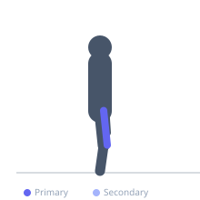

Exercise guide / Single-Leg Machine Leg Extension
Single-Leg Machine Leg Extension
The single-leg machine leg extension trains one quadriceps at a time using the leg extension machine, with the non-working leg hanging free. Training unilaterally ensures equal development of both legs and allows greater focus on the mind-muscle connection. It is particularly useful during rehabilitation after knee injuries when the injured limb requires specific, isolated strengthening.
Primary muscles
rectus femoris
vastus lateralis
vastus medialis
vastus intermedius
Secondary muscles
Equipment
Leg Extension Machine


Starting position
- Sit on the leg extension machine. Place one leg under the pad with the knee at approximately 90 degrees. The other leg is free and not on the pad.
Setup
- Adjust the seat and pad to fit one leg. Set an appropriate weight — use less than the bilateral version.
Steps
- Step 1: Grip the handles and brace lightly.
- Step 2: Extend the working knee to bring the leg to full extension.
- Step 3: Squeeze the quadriceps at the top of the movement.
- Step 4: Lower with control back to the starting position.
Coaching cues
- Squeeze the quad at the top
- Control the return
- No hip rocking
Breathing
- Exhale on extension, inhale on the return.
Range of motion
- Full extension at the top. Return to 90 degrees of flexion at the bottom.
Tempo
- 2-1-3-0 (slow eccentric is especially valuable for quad development)
Common mistakes
- Using momentum to swing the weight
- Not reaching full extension
- Excessive compensatory hip movement
Safety
- Very high patellar load — use controlled tempo and appropriate weight
- If you have patellar issues, limit range to pain-free only
Training
- strength: 8–12 reps
- hypertrophy: 12–20 reps
- strength: 3–4 sets
- hypertrophy: 3–4 sets
- Rest: {'strength': 90, 'hypertrophy': 60}